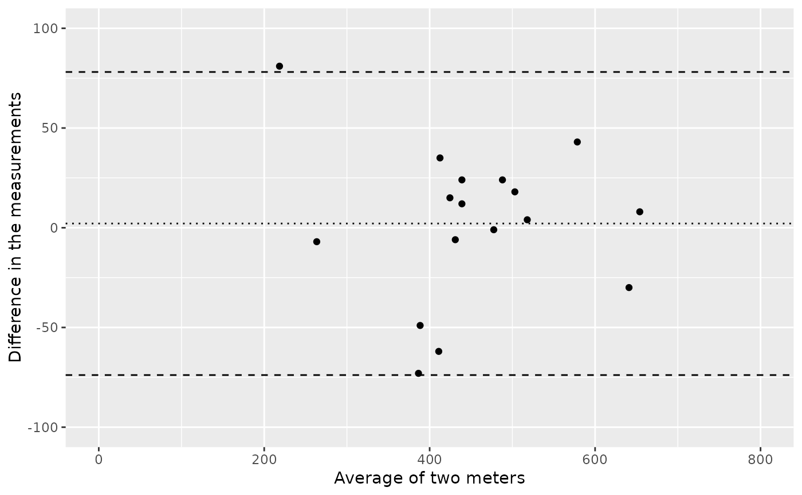

Construct and plot a Bland Altman plot in ggplot2.
Arguments
- x
a
data.framewith two columns, or an object that can be coerced to a data frame. If adata.framewith more than two columns is used only the first two columns will be used.- alpha
(Defaults to 0.05) place (1 - alpha)*100 place on the plot.
- generate_data
logical, defaults to TRUE. If TRUE, then the call to
qblandaltman_build_data_frameis done automatically for you. If FALSE, then you should explicitly callqblandaltman_build_data_framebefore callingqblandaltman.
Value
a ggplot. Minimal aesthetics have been used so that the user may modify the graphic as desired with ease.
Details
Providing a data.frame with two columns, the function returns a ggplot
version of a Bland Altman plot with the specified confidence intervals.
Two ways to call the plotting function. If you submit a data.frame
qblandaltman then the data needed to produce the Bland Altman plot is
automatically generated by a call to qblandaltman_build_data_frame.
Alternatively, you may call qblandaltman_build_data_frame directly and
then call qblandaltman. This might be helpful if you are putting
multiple Bland Altman plots together into one ggplot object. See Examples.
More details and examples for graphics within qwraps2 are in the vignette(“qwraps2-graphics”, package = “qwraps2”)
References
Altman, Douglas G., and J. Martin Bland. "Measurement in medicine: the analysis of method comparison studies." The statistician (1983): 307-317.
Bland, J. Martin, and Douglas G Altman. "Statistical methods for assessing agreement between two methods of clinical measurement." The lancet 327, no. 8476 (1986): 307-310.
Examples
data(pefr)
pefr_m1 <-
cbind("Large" = pefr[pefr$measurement == 1 & pefr$meter == "Wright peak flow meter", "pefr"],
"Mini" = pefr[pefr$measurement == 1 & pefr$meter == "Mini Wright peak flow meter", "pefr"])
# The Bland Altman plot plots the average value on the x-axis and the
# difference in the measurements on the y-axis:
qblandaltman(pefr_m1) +
ggplot2::xlim(0, 800) +
ggplot2::ylim(-100, 100) +
ggplot2::xlab("Average of two meters") +
ggplot2::ylab("Difference in the measurements")
